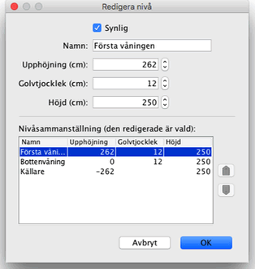

|
Du kan redigera synligheten, namnet, upph�jningen och h�jden p� varje niv� genom att
dubbelklicka p� dess flik eller genom att v�lja
Planl�sning > Niv�er > Redigera niv�... fr�n menyn. Modifieringspanelen
f�r en niv� l�ter dig redigera dess atribut, men visar ocks� en tabell som beskriver
alla niv�er f�r ett hem, och d�r den valda linjen visar aktuell niv�.

Tjockleken f�r ett golv anv�nds f�r att r�kna ut den vertikala kanten runt ett golv i
3D-vyn. Denna yta �r synlig runt h�l i golvet och p� kanter p� en mezzanin eller
balkong.
Upph�jningen av en niv� kan vara positiv eller negativ. I det senare fallet kommer
marken automatiskt att gr�vas in i 3D-vyn varje g�ng en m�bel, ett rum eller en st�ngd
upps�ttning med v�ggar l�ggs till underjordsniv�n. Denna funktion kan anv�ndas f�r att
placera en pool i marken eller en k�llarv�ning med en eller flera niv�er.
|